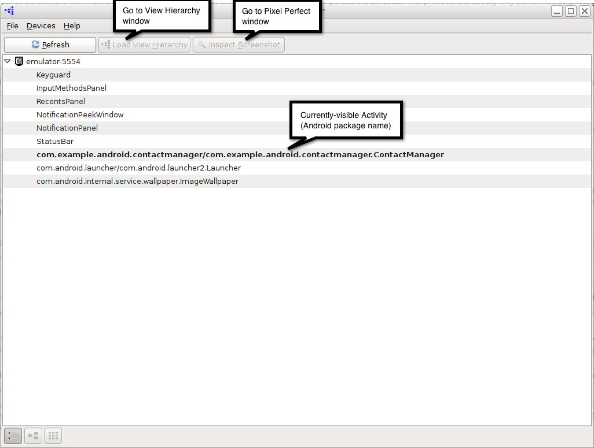
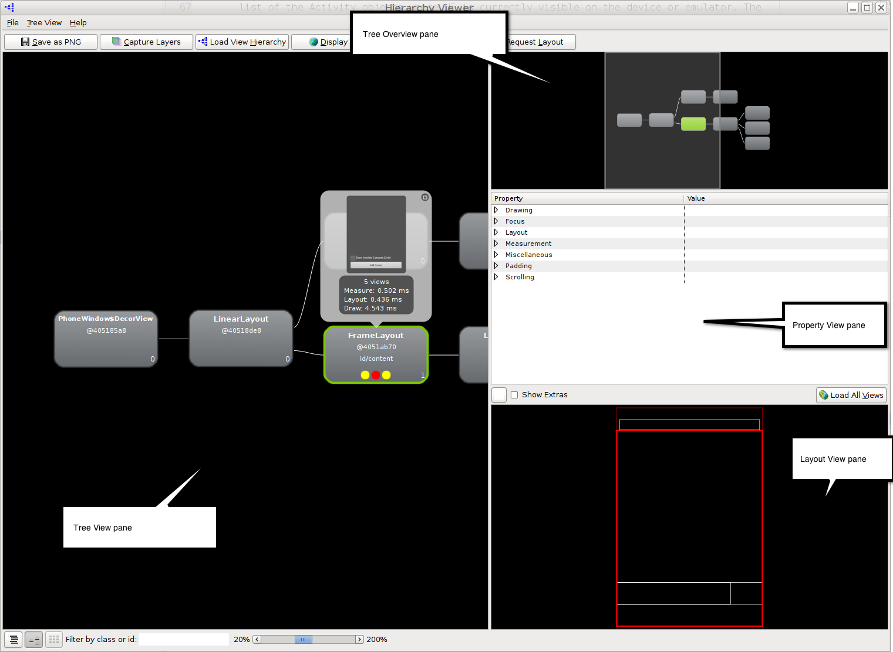
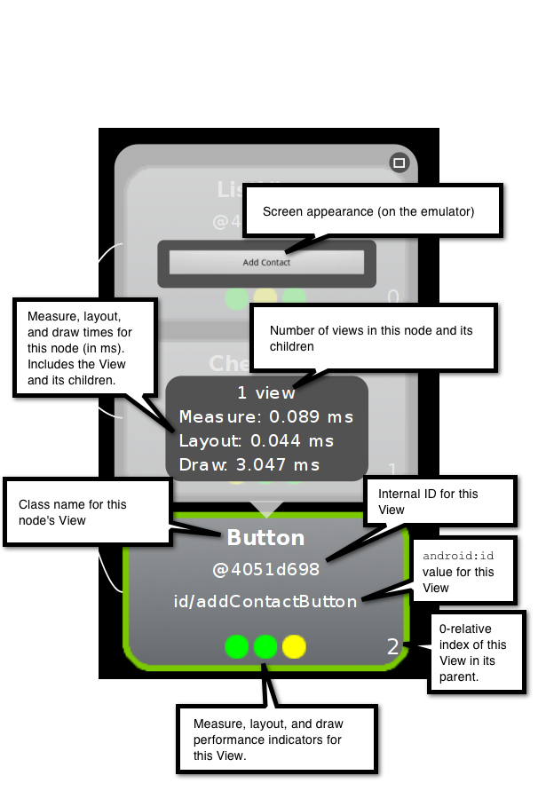
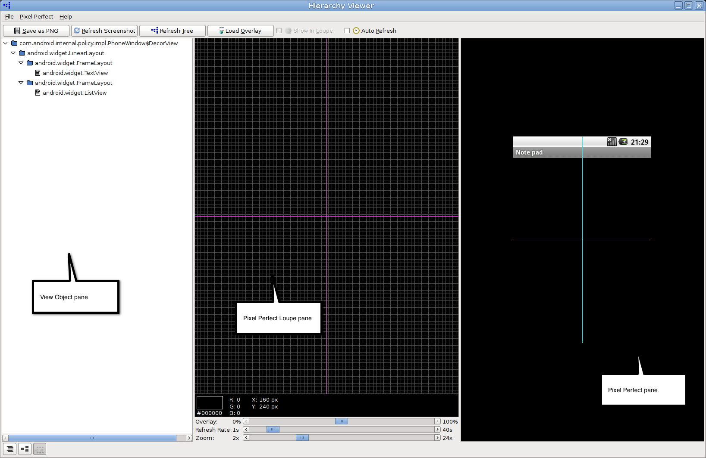

In this document
Related videos
Sometimes your application's layout can slow down your application.
To help debug issues in your layout, the Android SDK provides the Hierarchy Viewer and
lint tools.
The Hierarchy Viewer application allows you to debug and optimize your user interface. It provides a visual representation of the layout's View hierarchy (the View Hierarchy window) with performance information for each node in the layout, and a magnified view of the display (the Pixel Perfect window) to closely examine the pixels in your layout.
Android lint is a static code scanning tool that helps you optimize the layouts and layout
hierarchies of your applications, as well as detect other common coding problems. You can run it against your layout files or resource
directories to quickly check for inefficiencies or other types of problems that could be
affecting the performance of your application.
Using Hierarchy Viewer
Running Hierarchy Viewer and choosing a window
To run Hierarchy Viewer, follow these steps:
-
Connect your device or launch an emulator.
To preserve security, Hierarchy Viewer can only connect to devices running a developer version of the Android system.
- If you have not done so already, install the application you want to work with.
- Run the application, and ensure that its UI is visible.
-
From a terminal, launch
hierarchyviewerfrom the<sdk>/tools/directory. - The first window you see displays a list of devices and emulators. To expand the list of Activity objects for a device or emulator, click the arrow on the left. This displays a list of the Activity objects whose UI is currently visible on the device or emulator. The objects are listed by their Android component name. The list includes both your application Activity and system Activity objects. A screenshot of this window appears in figure 1.
- Select the name of your Activity from the list. You can now look at its view hierarchy using the View Hierarchy window, or look at a magnified image of the UI using the Pixel Perfect window.
To learn how to use the View Hierarchy window, go to About the View Hierarchy window. To learn how to use the Pixel Perfect window, go to About the Pixel Perfect window.
Figure 1. Hierarchy Viewer device window
About the View Hierarchy window
The View Hierarchy window displays the View objects that form the UI of the Activity that is running on your device or emulator. You use it to look at individual View objects within the context of the entire View tree. For each View object, the View Hierarchy window also displays rendering performance data.
To see the View Hierarchy window, run Hierarchy Viewer as described in the section Running Hierarchy Viewer and choosing a window. Next, click View Hierarchy at the top of the device window.
You should see four panes:
-
Tree View: The left-hand pane displays the Tree View,
a diagram of the Activity object's hierarchy of views. Use Tree View to examine individual
View objects and see the relationships between View objects in your UI.
To zoom in on the pane, use the slider at the bottom of the pane, or use your mouse scroll wheel. To move around in the pane or reveal View objects that are not currently visible, click and drag the pane.
To highlight the nodes in the tree whose class or ID match a search string, enter the string in the Filter by class or id: edit box at the bottom of the window. The background of nodes that match the search string will change from gray to bright blue.
To save a screenshot of Tree View to a PNG file, click Save As PNG at the top of the View Hierarchy window. This displays a dialog in which you can choose a directory and file name.
To save a layered screenshot of your device or emulator to an Adobe Photoshop (PSD) file, click Capture Layers at the top of the View Hierarchy window. This displays a dialog in which you can choose a directory or file name. Each View in the UI is saved as a separate Photoshop layer.
In Photoshop (or similar program that accepts .psd files), you can hide, show or edit a layer independently of others. When you save a layered screenshot, you can examine and modify the image of an individual View object. This helps you experiment with design changes.
-
The upper right-hand pane displays the Tree Overview, a smaller map
representation of the entire Tree View window. Use Tree Overview to identify the part of the
view tree that is being displayed in Tree View.
You can also use Tree Overview to move around in the Tree View pane. Click and drag the shaded rectangle over an area to reveal it in Tree View.
-
The middle right-hand pane displays the Properties View,
a list of the properties for a selected View object. With Properties View, you can
examine all the properties without having to look at your application source.
The properties are organized by category. To find an individual property, expand a category name by clicking the arrow on its left. This reveals all the properties in that category.
-
The lower right-hand pane displays the Layout View,
a block representation of the UI. Layout View is another way to navigate through your UI.
When you click on a View object in Tree View, its position in the UI is highlighted.
Conversely, when you click in an area of Layout View, the View object for that area is
highlighted in Tree View.
The outline colors of blocks in Layout View provide additional information:
- Bold red: The block represents the the View that is currently selected in Tree View.
- Light red: The block represents the parent of the block outlined in bold red.
- White: The block represents a visible View that is not a parent or child of the View that is currently selected in Tree View.
When the UI of the current Activity changes, the View Hierarchy window is not automatically updated. To update it, click Load View Hierarchy at the top of the window.
Also, the window is not updated if you switch to a new Activity. To update it, start by clicking the window selection icon in the bottom left-hand corner of the window. This navigates back to the Window Selection window. From this window, click the Android component name of the new Activity and then click Load View Hierarchy at the top of the window.
A screenshot of the View Hierarchy window appears in figure 2.
Figure 2. The View Hierarchy window
Working with an individual View in Tree View
Each node in Tree View represents a single View. Some information is always visible. Starting at the top of the node, you see the following:
- View class: The View object's class.
- View object address: A pointer to View object.
-
View object ID: The value of the
android:idattribute. -
Performance indicators: A set of three colored dots that indicate the rendering
speed of this View relative to other View objects in the tree. The three dots
represent (from left to right) the measure, layout, and draw times of the rendering.
The colors indicate the following relative performance:
- Green: For this part of the render time, this View is in the faster 50% of all the View objects in the tree. For example, a green dot for the measure time means that this View has a faster measure time than 50% of the View objects in the tree.
- Yellow: For this part of the render time, this View is in the slower 50% of all the View objects in the tree. For example, a yellow dot for the layout time means that this View has a slower layout time than 50% of the View objects in the tree.
- Red: For this part of the render time, this View is the slowest one in the tree. For example, a red dot for the draw time means that this View takes the most time to draw of all the View objects in the tree.
- View index: The zero-based index of the View in its parent View. If it is the only child, this is 0.
When you select a node, additional information for the View appears in a small window above the node. When you click one of the nodes, you see the following:
- Image: The actual image of the View, as it would appear in the emulator. If the View has children, these are also displayed.
- View count: The number of View objects represented by this node. This includes the View itself and a count of its children. For example, this value is 4 for a View that has 3 children.
- Render times: The actual measure, layout, and draw times for the View rendering, in milliseconds. These represent the same values as the performance indicators mentioned in the preceding section.
An annotated screenshot of an individual node in the Tree View window appears in figure 3.
Figure 3. An annotated node in Tree View
Debugging with View Hierarchy
The View Hierarchy window helps you debug an application by providing a static display of the UI. The display starts with your application's opening screen. As you step through your application, the display remains unchanged until you redraw it by invalidating and then requesting layout for a View.
To redraw a View in the display:
- Select a View in Tree View. As you move up towards the root of the tree (to the left in the Tree View), you see the highest-level View objects. Redrawing a high-level object usually forces the lower-level objects to redraw as well.
- Click Invalidate at the top of the window. This marks the View as invalid, and schedules it for a redraw at the next point that a layout is requested.
- Click Request Layout to request a layout. The View and its children are redrawn, as well as any other View objects that need to be redrawn.
Manually redrawing a View allows you to watch the View object tree and examine the properties of individual View objects one step at a time as you go through breakpoints in your code.
Optimizing with View Hierarchy
View Hierarchy also helps you identify slow render performance. You start by looking at the View nodes with red or yellow performance indicators to identify the slower View objects. As you step through your application, you can judge if a View is consistently slow or slow only in certain circumstances.
Remember that slow performance is not necessarily evidence of a problem, especially for ViewGroup objects. View objects that have more children and more complex View objects render more slowly.
The View Hierarchy window also helps you find performance issues. Just by looking at the performance indicators (the dots) for each View node, you can see which View objects are the slowest to measure, layout, and draw. From that, you can quickly identify the problems you should look at first.
Using Pixel Perfect
Pixel Perfect is a tool for examining pixel properties and laying out UIs from a design drawing.
About the Pixel Perfect window
The Pixel Perfect window displays a magnified image of the screen that is currently visible on the emulator or device. In it, you can examine the properties of individual pixels in the screen image. You can also use the Pixel Perfect window to help you lay out your application UI based on a bitmap design.
To see the Pixel Perfect window, run Hierarchy Viewer, as described in the section Running Hierarchy Viewer and choosing a window. Next, click Inspect Screenshot at the top of the device window. The Pixel Perfect window appears.
In it, you see three panes:
- View Object pane: This is a hierarchical list of the View objects that are currently visible on the device or emulator screen, including both the ones in your application and the ones generated by the system. The objects are listed by their View class. To see the class names of a View object's children, expand the View by clicking the arrow to its left. When you click a View, its position is highlighted in the Pixel Perfect pane on the right.
-
Pixel Perfect Loupe pane: This is the magnified screen image. It is overlaid by a grid in
which each square represents one pixel. To look at the information for a pixel, click in its
square. Its color and X,Y coordinates appear at the bottom of the pane.
The magenta crosshair in the pane corresponds to the positioning crosshair in the next pane. It only moves when you move the crosshair in the next pane.
To zoom in or out on the image, use the Zoom slider at the bottom of the pane, or use your mouse's scroll wheel.
When you select a pixel in the Loupe pane, you see the following information at the bottom of the pane:
- Pixel swatch: A rectangle filled with the same color as the pixel.
- HTML color code: The hexadecimal RGB code corresponding to the pixel color
- RGB color values: A list of the (R), green (G), and blue (B) color values of the pixel color. Each value is in the range 0-255.
- X and Y coordinates: The pixel's coordinates, in device-specific pixel units. The values are 0-based, with X=0 at the left of the screen and Y=0 at the top.
-
Pixel Perfect pane: This displays the currently visible screen as it would appear in the
emulator.
You use the cyan crosshair to do coarse positioning. Drag the crosshair in the image, and the Loupe crosshair will move accordingly. You can also click on a point in the Pixel Perfect pane, and the crosshair will move to that point.
The image corresponding to the View object selected in the View Object pane is outlined in a box that indicates the View object's position on the screen. For the selected object, the box is bold red. Sibling and parent View objects have a light red box. View objects that are neither parents nor siblings are in white.
The layout box may have other rectangles either inside or outside it, each of which indicates part of the View. A purple or green rectangle indicates the View bounding box. A white or black box inside the layout box represents the padding, the defined distance between the View object's content and its bounding box. An outer white or black rectangle represents the margins, the distance between the View bounding box and adjacent View objects. The padding and margin boxes are white if the layout background is black, and vice versa.
You can save the screen image being displayed in the Pixel Perfect pane as a PNG file. This produces a screenshot of the current screen. To do this, click Save as PNG at the top of the window. This displays a dialog, in which you can choose a directory and filename for the file.
The panes are not automatically refreshed when you change one of the View objects or go to another Activity. To refresh the Pixel Perfect pane and the Loupe pane, click Refresh Screenshot at the top of the window. This will change the panes to reflect the current screen image. You still may need to refresh the View Object pane; to do this, click Refresh Tree at the top of the window.
To automatically refresh the panes while you are debugging, set Auto Refresh at the top of the window, and then set a refresh rate with the Refresh Rate slider at the bottom of the Loupe pane.
Working with Pixel Perfect overlays
You often construct a UI based on a design done as a bitmap image. The Pixel Perfect window helps you match up your View layout to a bitmap image by allowing you to load the bitmap as an overlay on the screen image.
To use a bitmap image as an overlay:
- Start your application in a device or emulator and navigate to the Activity whose UI you want to work with.
- Start Hierarchy Viewer and navigate to the Pixel Perfect window.
- At the top of the window, click Load Overlay. A dialog opens, prompting for the image file to load. Load the image file.
-
Pixel Perfect displays the overlay over the screen image in the Pixel Perfect pane. The
lower left corner of the bitmap image (X=0, Y=max value) is anchored on the lower
leftmost pixel (X=0, Y=max screen) of the screen.
By default, the overlay has a 50% transparency, which allows you to see the screen image underneath. You can adjust this with the Overlay: slider at the bottom of the Loupe pane.
Also by default, the overlay is not displayed in the Loupe pane. To display it, set Show in Loupe at the top of the window.
The overlay is not saved as part of the screenshot when you save the screen image as a PNG file.
A screenshot of the Pixel Perfect window appears in figure 4.
Figure 4. The Pixel Perfect window
Using lint to Optimize Your UI
The Android lint tool lets you analyze the XML files that define your application's UI to find inefficiencies in the view hierarchy.
Note: The Android layoutopt tool has been replaced by the lint tool beginning in ADT and SDK Tools revision 16. The lint tool reports UI layout performance issues in a similar way as layoutopt, and detects additional problems.
For more information about using lint, see Improving Your Code with lint and the lint reference documentation.